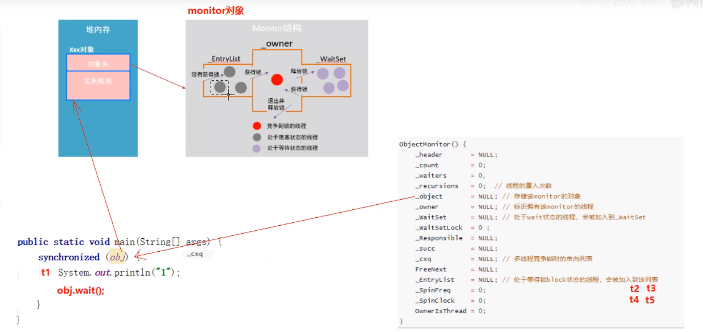

synchronized
保证不出现三个高并发问题
保证原子性
线程进入代码块或方法必须拥有进入的锁，一个锁同一时刻只能被一个线程拿到
保证可见性
synchronized 进入lock时会清空工作内存，从主内存取数据，退出unlock时会强制将新值写入到主内存，其他线程获取锁时由于要从主内存取数据，必然会保证数据时最新的
保证有序性
synchronized保证了原子性，所以即便优化改变了顺序，因为java能够保证单线程的结果的正确性，最终切换线程获取到锁时也是获取到了正确的数据
synchronized的两个特性
可重入特性
- 一个线程可以多次执行synchronized获取同一把锁
- synchronized代码块内嵌套synchronized代码块，即便两个都是要获取同一个对象的锁也是能进去的
- 一个线程内重复获取锁，锁对象中会有一个计数器记录锁被获取了多少次，unlock会计数器-1，直到减为0其他线程才可以获取这个锁
- 好处
- 可避免单线程因为用一个锁死锁
- 可以更好地来封装代码
不可中断特性
- 一个线程获得锁，另一个线程想要获得锁必须处于阻塞或等待状态，如果锁一直没有被释放，则等待的线程会一直等待
- 与Lock的对比
- Lock可以有可中断或者不可中断两种方式
- 使用lock、unlock则是不可中断
- trylock(等待时间)返回是否获取到锁，根据结果进行操作，此时是可中断，在没有获取到锁的状态下是不需要unlock的
- Lock可以有可中断或者不可中断两种方式
synchronized原理
Javap反编译方法看原理
- 同步代码块
代码块开始地方->monitorenter
代码块结束地方->monitorexit
- 对象锁其实是对象的监视器monitor
每一个对象都会和一个monitor关联，监视器被占用时会被锁住，其他线程无法获取该monitor
monitor
owner：拥有锁的线程
recursions：记录获取锁的次数
-
monitorenter
当JVM执行某个线程的某个方法内部的monitorenter时，会尝试去获取当前对象的monitor的所有权
如果能获取到则计数+1，monitor拥有者设置为当前线程 -
monitorexit
当JVM执行某个线程的某个方法内部的monitorexit时，会将当前对象的monitor的锁记录数-1
- 同步方法
同步方法中JVM会隐式调用monitorenter和monitorexit
synchronized和Lock的区别
1、关键字和接口
2、是否可中断，synchronized不可中断，Lock可使用tryLock设置为可终端
3、是否需要手动释放锁，synchronized会自动释放锁，Lock需要手动释放锁，常写在finally里
4、是否知道是否获取到锁，synchronized不能知道是否获取到锁，Lock可以知道是否拿到锁，如tryLock可以获取
5、是否可以锁住方法，synchronized可以锁定方法和代码块，Lock只能锁定代码块
6、Lock的ReenTrantReadWriteLock可以提高多线程读的效率
7、是否是公平锁，synchronized是非公平锁，ReentrantLock可以控制是否是公平锁（在构造器中传入）
注：非公平锁，不按顺序去获取锁
JVM源码方式看原理

- monitor竞争
1.通过CAS尝试把monitor的owner字段设置为当前线程。
2.如果设置之前的owner指向当前线程，说明当前线程再次进入monitor，即重入锁，执行recursions++，记录重入的次数。
3.如果当前线程是第一次进入该monitof，设置recursions为1，_owner为当前线程，该线程成功获得锁并返回。
4.如果获取锁失败，则等待锁的释放。
1.通过CAS尝试把monitor的owner字段设置为当前线程。
2.如果设置之前的owner指向当前线程，说明当前线程再次进入monitor，即重入锁，执行recursions++，记录重入的次数。
3.如果当前线程是第一次进入该monitof，设置recursions为1，_owner为当前线程，该线程成功获得锁并返回。
4.如果获取锁失败，则等待锁的释放。 - monitor等待
1.当前线程被封装成ObjectWaiter对象node，状态设置成ObjectWaiter:TS_CXQ。
2.在for循环中，通过CAS把node节点push到_cxq列表中，同一时刻可能有多个线程把自己的node节点push到cXq列表中。
3.node节点push到_cxq列表之后，通过自旋尝试获取锁，如果还是没有获取到锁，则通过park将当前线程挂起，等待被唤醒。
4.当该线程被唤醒时，会从挂起的点继续执行，通过objectMonitor:：TryLock尝试获取锁。
synchronized优化
CAS
- 作用：保证共享变量写入时的原子操作
- 原理：旧值V，新值X，改后想写入值，在写入B前，获取内存中当前值X，比较之前获取的旧值V和X如果相同则写入
- UnSafe类

- UnSafe类
悲观锁和乐观锁
悲观锁：总有刁民想害朕，所以每次都锁住，synchronized和ReentrantLock
乐观锁：我觉着不太容易有人和我竞争，cas+volatile，适用于竞争不激烈、多核CPU场景
锁升级(1.6优化)
无锁->偏向锁->轻量级锁->重量级锁
偏向锁
使用场景：只有一个线程反复获取锁和释放锁

- 偏向锁的原理是什么？
当锁对象第一次被线程获取的时候，虚拟机将会把对象头中的标志位设为“01”，即偏向模式。同时使用CAS操作把获取到这个锁的线程的ID记录在对象的Mark word之中，如果CAS操作成功，持有偏向锁的线程以后每次进入这个锁相关的同步块时，虚拟机都可以不再进行任何同步操作，偏向锁的效率高。 - 偏向锁的好处是什么？
偏向锁是在只有一个线程执行同步块时进一步提高性能，适用于一个线程反复获得同一锁的情况。偏向锁可以提高带有同步但无竟争的程序性能。
轻量级锁
使用场景：多线程交替执行获取锁
- 轻量级锁的原理是什么？
将对象的Mark Word复制到栈帧中的Lock Recod中。Mark Word更新为指向Lock Record的指针。 - 轻量级锁好处是什么？
在多线程交替执行同步块的情况下，可以避免重量级锁引起的性能消耗。
重量级锁
阻塞和唤醒需要CPU从用户态和核心态相互转换，两态的转换浪费资源
自旋锁
不阻塞，循环几次尝试获取锁，默认10次
适应性自旋锁
根据上次自旋的次数动态确定自旋的时间和次数
锁消除
如果锁逃不出方法，所不存在竞争，则取消锁，由即时编译器JIT决定
锁粗化
什么是锁粗化？JVM会探测到一连串细小的操作都使用同一个对象加锁，将同步代码块的范围放大，放到这串操作的外面，这样只需要加一次锁即可。
如何对synchronized进行优化
- 减少代码块内容
- 降低粒度
- 读写分离